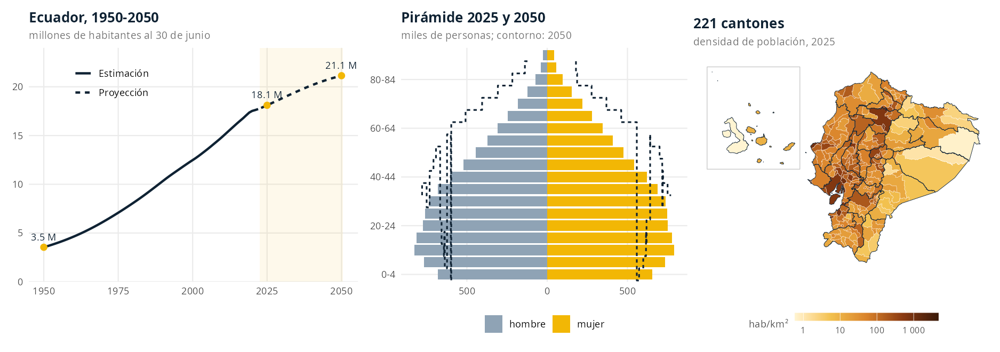
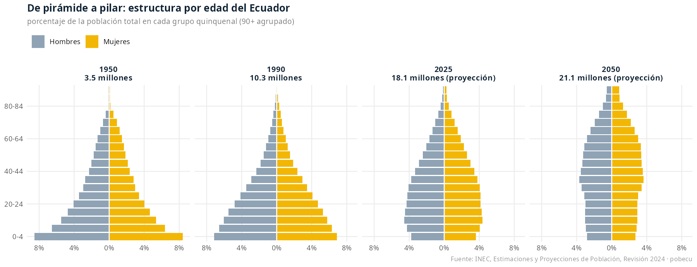
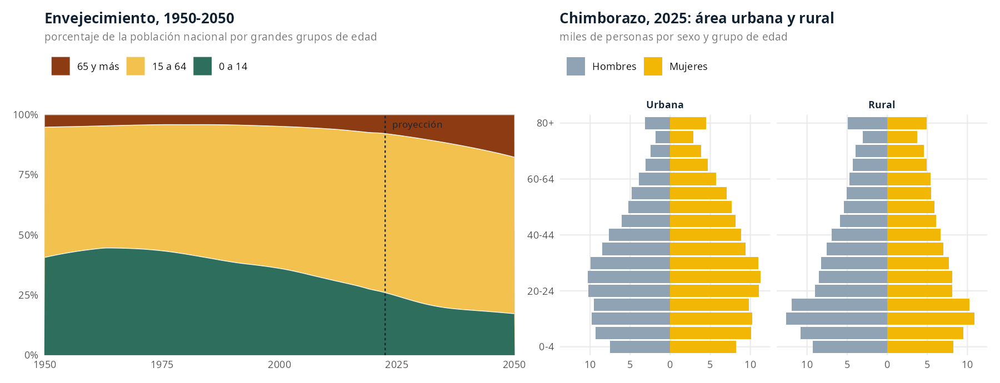
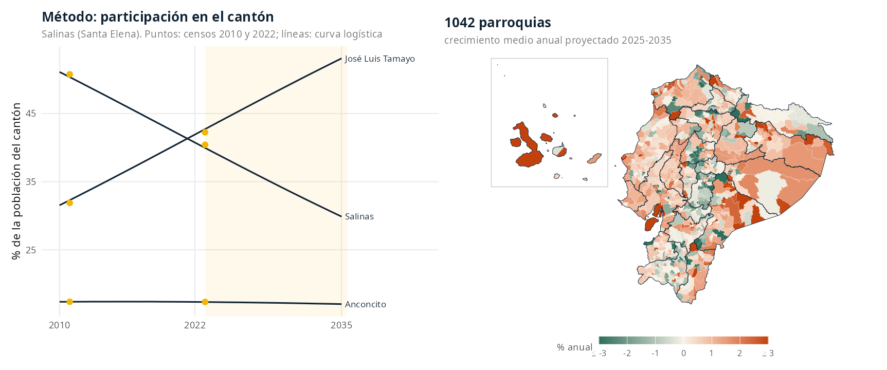

pobecu da acceso en una línea de código a la población del Ecuador por provincia, cantón y parroquia, desde 1950 hasta 2050, con los códigos de la División Político-Administrativa (DPA). Está pensado para obtener denominadores de tasas, coberturas e indicadores sin descargar ni limpiar hojas de cálculo.
Nota: pobecu es un paquete independiente, desarrollado a título personal. No es un producto oficial del INEC ni de ninguna otra institución. Las cifras nacionales, provinciales y cantonales son las oficiales del INEC, sin modificar. Las parroquiales son una estimación propia del paquete, documentada abajo.

¿Para qué sirve?
Casi todo indicador de salud pública, educación o planificación necesita un denominador de población: la incidencia de una enfermedad, la mortalidad, la cobertura de vacunación, la razón de médicos por habitante o el tamaño de una población objetivo. En Ecuador esas cifras vienen del INEC en archivos Excel extensos, con formatos que cambian entre revisiones, sin un formato común entre niveles y sin datos parroquiales proyectados.
pobecu resuelve eso:
- Cifras oficiales listas para usar. Las Estimaciones y Proyecciones de Población, Revisión 2024 del INEC: nacional 1950-2050, provincial 1990-2035 y cantonal 2010-2035, por sexo, edad simple y área urbana/rural.
- Parroquias proyectadas hasta 2035. El INEC no publica proyecciones parroquiales. pobecu ofrece una estimación que suma exactamente la cifra oficial de cada cantón, por sexo y edad.
-
Grupos de edad a medida. Quinquenales, edades simples, etapas de vida del INEC o cualquier corte, por ejemplo
c(0, 1, 5, 15, 65). -
Denominadores y tasas en una línea.
pob_unir()ypob_tasa()unen la población con tu tabla de casos por código DPA, aunque los códigos vengan de Excel sin ceros a la izquierda. -
Mapas nativos con geoecu. Ambos paquetes usan los mismos códigos DPA, y
pob_mapa()devuelve la capasfcon población y densidad. -
Coherente y reproducible. Las parroquias suman su cantón, los cantones su provincia y las provincias el total nacional. Todo el procesamiento está en
data-raw/y se regenera cuando el INEC publica una nueva revisión.
Instalación
# install.packages("remotes")
remotes::install_github("f-slg/pobecu", build_vignettes = TRUE)
# Opcional, para mapas
remotes::install_github("f-slg/geoecu")Los grupos quinquenales vienen dentro del paquete (1,2 MB) y funcionan sin conexión. Las edades simples (2 MB) se descargan automáticamente la primera vez que se piden y se guardan en caché.
Guía rápida
La función principal es poblacion():
library(pobecu)
poblacion(nivel = "canton", # "nacional", "provincia", "canton" o "parroquia"
anio = 2025, # uno o varios años; NULL = todos
provincia = NULL, # filtro por nombre o código: "Loja", "11", 11
canton = NULL, # filtro por nombre o código
sexo = FALSE, # TRUE: hombre / mujer
area = FALSE, # TRUE: urbana / rural (2010-2035)
edad = NULL) # NULL, "quinquenal", "simple", "etapas" o cortesPoblación de las provincias en 2025:
poblacion("provincia", anio = 2025)
#> dpa_provin provincia anio poblacion
#> 1 01 Azuay 2025 834958
#> 2 02 Bolívar 2025 204351
#> 3 03 Cañar 2025 237460
#> 4 04 Carchi 2025 177020
#> 5 05 Cotopaxi 2025 493382
#> ...Un cantón por sexo y año. Los nombres no distinguen tildes ni mayúsculas:
poblacion("canton", anio = 2025:2026, canton = "loja", sexo = TRUE)
#> dpa_canton canton dpa_provin provincia anio sexo poblacion
#> 1 1101 Loja 11 Loja 2025 hombre 124296
#> 2 1101 Loja 11 Loja 2025 mujer 134218
#> 3 1101 Loja 11 Loja 2026 hombre 125024
#> 4 1101 Loja 11 Loja 2026 mujer 134953Grupos de edad
edad = |
Resultado | Niveles |
|---|---|---|
NULL |
sin desagregar | todos |
"quinquenal" |
0-4, 5-9, …, 100+ (parroquias: hasta 85+) |
todos |
"simple" |
0, 1, 2, …, 100 (100 = 100 y más) | nacional, provincia, cantón |
"etapas" |
0-11, 12-17, 18-29, 30-64, 65+ (INEC) |
nacional, provincia, cantón |
c(0, 1, 5) (cortes) |
0, 1-4, 5+: cualquier agrupación |
todos (parroquias: múltiplos de 5) |
# Menores de 1 año y de 1 a 4: poblaciones objetivo de vacunación
poblacion("canton", anio = 2026, canton = "Loja", edad = c(0, 1, 5))
#> dpa_canton canton dpa_provin provincia anio edad poblacion
#> 1 1101 Loja 11 Loja 2026 0 3427
#> 2 1101 Loja 11 Loja 2026 1-4 15224
#> 3 1101 Loja 11 Loja 2026 5+ 241326
# Etapas de vida del INEC
poblacion("provincia", anio = 2030, provincia = "Pichincha", edad = "etapas")
#> dpa_provin provincia anio edad poblacion
#> 1 17 Pichincha 2030 0-11 447539
#> 2 17 Pichincha 2030 12-17 296136
#> 3 17 Pichincha 2030 18-29 620040
#> 4 17 Pichincha 2030 30-64 1665096
#> 5 17 Pichincha 2030 65+ 371097
# Urbano y rural, con menores de 5 y adultos mayores
poblacion("canton", anio = 2025, provincia = "Azuay", area = TRUE,
edad = c(0, 5, 65))Pirámides y estructura por edad
Con sexo = TRUE y edad = "quinquenal" tienes todo lo necesario para una pirámide de población de cualquier territorio y año:
library(ggplot2)
pir <- poblacion("nacional", anio = c(1950, 1990, 2025, 2050),
sexo = TRUE, edad = seq(0, 90, 5))
pir$pct <- 100 * pir$poblacion / ave(pir$poblacion, pir$anio, FUN = sum)
ggplot(pir, aes(ifelse(sexo == "hombre", -pct, pct), edad, fill = sexo)) +
geom_col(width = 0.9) +
facet_wrap(~anio, nrow = 1) +
scale_x_continuous(labels = function(x) paste0(abs(x), "%")) +
labs(x = NULL, y = NULL)
La transición demográfica también se ve en los grandes grupos de edad, y la desagregación por área permite comparar la población urbana y la rural de cada provincia o cantón:
poblacion("nacional", edad = c(0, 15, 65)) # 1950-2050
poblacion("provincia", anio = 2025, provincia = "Chimborazo",
sexo = TRUE, area = TRUE, edad = "quinquenal")
Tasas y denominadores
pob_tasa() agrega a tu tabla la población del territorio y año correspondientes, y calcula la tasa por 100 000 habitantes (u otra base):
casos <- data.frame(dpa_canton = c(1101, 1102, 701), # códigos como número
anio = 2024, casos = c(120, 8, 40))
pob_tasa(casos, "casos")
#> dpa_canton anio casos poblacion tasa
#> 1 1101 2024 120 257110 46.67263
#> 2 1102 2024 8 26544 30.13864
#> 3 701 2024 40 321196 12.45346pob_unir() solo agrega la columna poblacion, lo que sirve para coberturas o tasas específicas por sexo y edad:
vacunas <- data.frame(dpa_provin = c("01", "11"), anio = 2025, edad = "0",
vacunados = c(11800, 6900))
v <- pob_unir(vacunas, nivel = "provincia", edad = "simple")
v$cobertura <- 100 * v$vacunados / v$poblacion
v
#> dpa_provin anio edad vacunados poblacion cobertura
#> 1 01 2025 0 11800 12589 93.73262
#> 2 11 2025 0 6900 7316 94.31383Los años pueden venir de una columna (anio por defecto) o fijarse con anio = 2025. Si un código o año no existe, la fila queda con NA y se avisa.
Parroquias
poblacion("parroquia", anio = 2030, canton = "Puyango")
#> dpa_parroq parroquia dpa_canton canton dpa_provin provincia anio poblacion
#> 1 111050 Alamor 1110 Puyango 11 Loja 2030 9334
#> 2 111051 Ciano 1110 Puyango 11 Loja 2030 1271
#> 3 111052 El Arenal 1110 Puyango 11 Loja 2030 1287
#> 4 111053 El Limo 1110 Puyango 11 Loja 2030 2440
#> 5 111054 Mercadillo 1110 Puyango 11 Loja 2030 1373
#> 6 111055 Vicentino 1110 Puyango 11 Loja 2030 919Las unidades son las 1042 parroquias del Censo 2022: 221 cabeceras cantonales (código terminado en 50) y 821 parroquias rurales. El censo no separa las parroquias urbanas: Cuenca, por ejemplo, tiene 15 en la cartografía, pero en el censo son una sola unidad, la cabecera 010150. Si tus datos usan códigos de parroquias urbanas, conviértelos y agrégalos antes de unir:
homologar_parroquia(c("010101", "010115", "010151"))
#> [1] "010150" "010150" "010151"
casos$dpa_parroq <- homologar_parroquia(casos$dpa_parroq)
casos <- aggregate(casos ~ dpa_parroq + anio, casos, sum)
pob_tasa(casos, "casos", nivel = "parroquia")Mapas con geoecu
geoecu contiene los límites de provincias, cantones y parroquias con los mismos códigos DPA. pob_mapa() une ambos paquetes y devuelve un objeto sf con la población y la densidad (hab/km²):
mapa <- pob_mapa("canton", anio = 2025, provincia = "Loja")
plot(mapa["densidad"])
# Nivel parroquial: las parroquias urbanas de geoecu se fusionan en su
# cabecera cantonal (agrupar_cabeceras()) para coincidir con el censo
pob_mapa("parroquia", anio = c(2025, 2035))
# Una tasa sobre el mapa
geoecu::geoecu_unir(pob_tasa(casos, "casos"), codigo = "dpa_canton",
nivel = "canton")La viñeta vignette("pobecu-geoecu") tiene ejemplos completos con ggplot2: densidad, tasas y mapas por año o grupo de edad.
Metodología
Cifras oficiales del INEC
Las cifras nacionales, provinciales y cantonales son las de la Revisión 2024 del INEC, basada en el Censo de Población y Vivienda 2022 y calculada por edad simple y año calendario. Son estimaciones hasta 2022 y proyecciones desde 2023, siempre al 30 de junio de cada año.
| Nivel | Método del INEC |
|---|---|
| Nacional y provincial | Componentes demográficos por cohortes: la población avanza año a año por la ecuación compensadora (nacimientos, defunciones y migración) para cada cohorte de edad y sexo. La fecundidad, la mortalidad y la migración se reconstruyen desde 1950 con censos, estadísticas vitales y encuestas, y se proyectan con curvas logísticas. |
| Cantonal | Extrapolación logística de proporciones (Arriaga, 1994) con variables sintomáticas (Bay, 1998): la provincia proyectada se reparte entre sus cantones según su participación, y el sexo y la edad se ajustan por raking. |
| Urbano y rural | Proyecciones derivadas (Naciones Unidas, 1974; CEPAL, 2024): porcentaje urbano de cada cantón y sexo proyectado con una curva logística; la población rural es la diferencia. |
pobecu no modifica estas cifras. Solo las pasa a formato largo, agrupa edades y agrega códigos y nombres.
Estimación parroquial (pobecu)
Como el INEC no proyecta parroquias, pobecu aplica un nivel más abajo la misma lógica que usa el INEC entre provincia y cantón:
- Participación en el cantón. Se calcula la proporción de la población del cantón que vive en cada parroquia en los censos 2010 y 2022, ambos con los límites de 2022. Esa proporción se interpola y extrapola de forma lineal en la escala logit (curva logística), y luego se reescala para que sume 1 en cada cantón.
- Total parroquial = proporción × población oficial del cantón.
- Sexo y edad por ajuste proporcional iterativo (IPF o raking). Se parte de la estructura de cada parroquia en el Censo 2022 y se ajusta a dos márgenes: el total parroquial y la estructura oficial del cantón por sexo y edad.
- Redondeo por mayor residuo, de modo que las parroquias suman exactamente la cifra oficial del cantón por sexo y grupo de edad.
Hay dos excepciones. En los 17 cantones con parroquias creadas después de 2010 se usa la participación constante de 2022. En los 41 cantones de una sola parroquia, esa parroquia recibe todo el cantón. La columna metodo de dpa_pob indica qué se aplicó a cada parroquia.

Verificaciones
Los scripts se detienen si falla cualquiera de estas condiciones:
- en cada año, el total nacional es igual a la suma de las provincias y a la de los cantones;
- urbano + rural = total en cada cantón, año, sexo y edad;
- las parroquias suman su cantón en cada año, sexo y grupo de edad;
- las 1042 parroquias tienen código DPA único y su estructura censal suma su total.
Los tests comparan además con cifras publicadas por el INEC; por ejemplo, Guayaquil tiene 2 908 589 habitantes en 2022 y 3 218 450 en 2035.
Limitaciones
- La estimación parroquial prolonga la tendencia 2010-2022: las parroquias que crecieron o decrecieron mucho entre los censos siguen esa dirección hasta 2035. La incertidumbre aumenta con la distancia a 2022.
- Las parroquias no tienen desagregación urbana/rural, y su último grupo de edad es
85+. - Las cifras de 2022 no coinciden con el conteo censal, porque la proyección del INEC corrige la omisión censal y se refiere a junio. En promedio, la estimación es un 4% mayor que el conteo.
- Los límites son los de la DPA vigente en el Censo 2022.
La metodología completa, con fórmulas, gráficos de validación y referencias, está en vignette("metodologia").
Datos incluidos
| Objeto | Contenido | Filas |
|---|---|---|
pob_nacional |
1950-2050 × área × sexo × 21 grupos quinquenales | 5 334 |
pob_provincias |
24 provincias, 1990-2035 × área × sexo × grupos | 72 576 |
pob_cantones |
221 cantones, 2010-2035 × área × sexo × grupos | 482 664 |
pob_parroquias |
1042 parroquias, 2010-2035 × sexo × 18 grupos (estimación) | 975 312 |
dpa_pob |
catálogo: códigos, nombres, tipo, método, censos 2010 y 2022 | 1 042 |
| edades simples | 0-100+ para los niveles oficiales (descarga en el primer uso) | 2,7 M |
Todas las tablas usan el mismo formato largo (anio, area, sexo, grupo_edad, poblacion), pero lo más cómodo es consultarlas con poblacion(). pob_fuentes() muestra la revisión y el periodo de cada nivel.
Funciones
| Función | Para qué |
|---|---|
poblacion() |
Consultar población por nivel, año, sexo, área y edad |
pob_unir(), pob_tasa()
|
Unir población a una tabla propia y calcular tasas |
pob_mapa() |
Capa sf de geoecu con población y densidad |
agrupar_cabeceras() |
Fusionar parroquias urbanas de una capa en su cabecera cantonal |
homologar_parroquia() |
Convertir códigos de parroquias urbanas al de su cabecera |
buscar_pob() |
Buscar territorios por nombre o código |
formatear_codigo(), normalizar_nombre()
|
Limpiar códigos DPA y nombres |
pob_fuentes() |
Fuentes, revisión y cobertura de los datos |
pobecu_cache_dir(), pobecu_usar_carpeta(), pobecu_limpiar_cache()
|
Gestionar los datos descargados (por ejemplo, para trabajar sin conexión) |
Actualización
Cuando el INEC publique una nueva revisión de sus proyecciones, los scripts de data-raw/ descargan los tabulados, reconstruyen todas las tablas y la estimación parroquial, y regeneran las figuras de este README:
| Script | Qué hace |
|---|---|
01_preparar_datos.R |
Descarga y lee los tabulados del INEC y asigna códigos DPA a las parroquias del censo |
02_estimar_parroquias.R |
Estimación parroquial (participación logística, IPF y redondeo) |
03_construir_datos.R |
Tablas del paquete y archivo de edades simples para el release |
04_logo.R, 05_figuras_readme.R
|
Logo y figuras, con datos reales |
Cada versión de los datos se publica como un release (datos-vX.Y.Z), y el número de versión del paquete indica la revisión del INEC que usa.
Cómo citar
citation("pobecu")Salas Guerrero, R. F. (2026). pobecu: Población del Ecuador por provincia,
cantón y parroquia. Paquete de R versión 0.1.0.
https://github.com/f-slg/pobecuCita también la fuente de los datos: INEC (2024). Estimaciones y Proyecciones de Población, Revisión 2024. Si usas cifras parroquiales, indica que son una estimación de pobecu y no cifras oficiales.
Paquetes relacionados
- geoecu: capas geográficas de provincias, cantones y parroquias del Ecuador, con los mismos códigos DPA.
Contribuir
Las preguntas de uso van en Discussions, y los errores y propuestas en issues. Consulta la guía de contribución. Este proyecto sigue un código de conducta: al participar, te comprometes a respetarlo.
Licencia
El código se distribuye bajo licencia MIT. Los datos provienen del INEC, que los publica en acceso abierto.